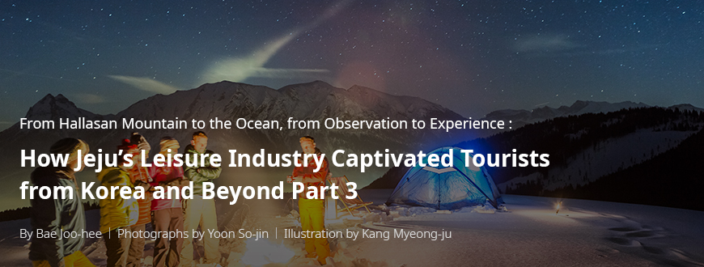
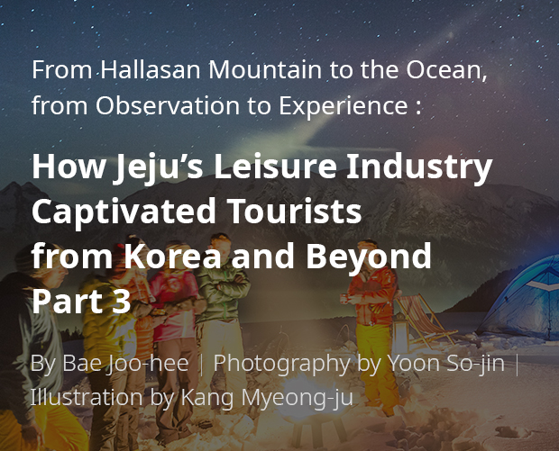
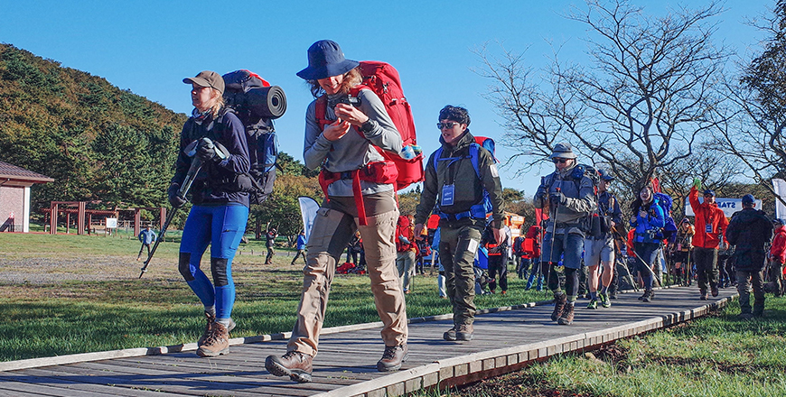
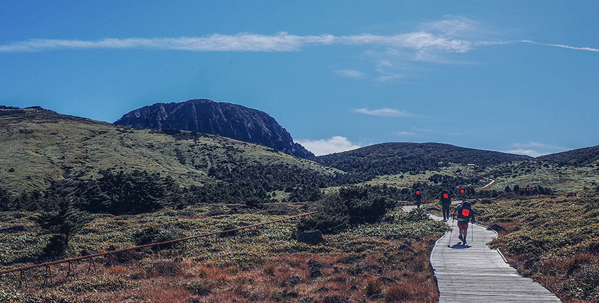
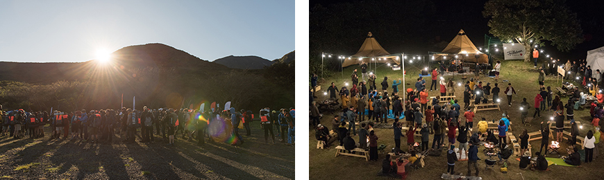

기획취재콘텐츠
- Home
- 제주라이프
- 기획취재콘텐츠
How Jeju’s Leisure Industry Captivated Tourists from Korea and Beyond Part 3 새로운 글



Trekking event that teaches how to enjoy and love nature - Fjallraven Classic
<Fjallraven Classic> is a trekking adventure program organized by Fjallraven, an outdoor brand from Sweden. As one of the largest trekking events organized by a single brand, it began with the aim to teaching people how to enjoy and benefit from nature, thereby loving it more. With a 15-year history under its belt, Fjallraven Classic encourages thousands of trekkers across the world to experience diverse climates and nature in Europe, Asia, and North America. Through such experiences, participants can feel a sense of accomplishment, as well as learn how to love and value nature.

- Fjallraven Classic Korea 2019 attracted top trekkers across the world ⓒFjallraven Korea -
After launching Fjallraven Classic in Sweden in 2005, the company began to hold the event in other countries, such as Denmark, the United States, and Hong Kong. In 2019, Korea was selected as the 5th country to host Fjallraven Classic. Fjallraven Classic Korea was held from October 9 to 12, 2019 (1st round: October 9 to 11 / 2nd round: October 10 to 12), in Jeju. The event was joined by 400 trekkers (300 from Korea and 100 from overseas), who walked the event’s 60 km trekking course. The extensive course consisted of the following sections: Day 1: Eorimok – Witseoreum – Donnaeko (Donnaeko Wonang Campsite); Day 2: Donnaeko – Dongbaekgil – Muobeomjeongsa (Hawonmaeul Campsite); and Day 3: Muobeomjeongsa – Doloreumgil – Cheonasupgil – Hebron Hill Resort (Finish).
Fjallraven Classic’s choice of Jeju for its Korean event
Fjallraven decided to hold the event in Korea in keeping with the brand’s plan to show the best of nature in every unique environment. At the same time, the feedback from passionate Korean trekkers contributed to the selection of Jeju as the event site.
Each year, more than 200 Korean trekkers participate in Fjallraven Classic Sweden. More than half of trekkers who joined the Hong Kong event were Koreans, and around 50 Koreans joined the Denmark event. The total number of participants is more amazing. Korea ranked fifth in the Sweden event, third in Denmark, and first in Hong Kong. Korean trekkers were that much passionate about the event, which more than justified holding the event in Korea. We held a fox trekking event ) in Jeju in 2018. The event was joined by Sweden representatives. They must have felt the passion of Korean trekkers. In 2019, we officially launched Fjallraven Classic Korea in Jeju.
- Kim Mun-gi, Fjallraven Classic Korea
※ 3) The trekking adventures organized by the company consist of three types: Classic, Polar, and Fox Trekking.
- Classic : Fjallraven Classic is a two-day trekking event held across eight countries. The specific dates, course difficulties, and periods vary per country. It is a sizable event with participants numbering between hundreds and thousands. Each participant should finish the course while wearing his/her own backpack along with camping and trekking gears. Each participant is also required to comply with the Fjallraven Classic rules for the environment and safety.
- Polar: Fjallraven Polar is an extreme winter event held in April, where participants complete a 300 km course across the Arctic for 5 days on dog sleds. For the event, 20 contestants are selected from applicants around the world that number several tens of thousands each year. Finalists are selected based on the videos and photographs uploaded on Facebook, the top 20 applicants with the highest number of votes are invited, and all expenses and equipment are covered and provided by Fjallraven.
- - Fox Trekking: A local version of Fjallraven Classic Korea, Fox Trekking is the most popular trekking adventure in Korea. Fox Trekking is held every Spring in various areas in Korea. A total of 10 events have been held since 2015. Each event attracts around 300 participants, who get a chance to experience what they can expect from Fjallraven Classic.
Jeju was selected for the Classic event for its iconic standing and superb nature on par with any natural wonder in the world. As the event was held in Korea, it was expected that most participants would be Koreans. Fjallraven wanted to choose an iconic place that would encourage participants to take long leaves and participate in the event, and it thought that Jeju fit the bill.

- Trekkers walking on the Hallasan Eorimok course, taking in the majestic view of the landscape The Baengnokdam Crater Lake seen high above the Oreum’s ridge. ⓒFjallraven Korea -
As it turned out, the company made the right choice. The Hallasan course was particularly praised by the participants. Despite great difficulty, the weather was pleasant that day, and the participants treated themselves to a special view of the mountain. The Day 2 and Day 3 courses consisted of beautiful forest trails around the mountain, which were easier than the Day 1 course. Participants enjoyed the therapeutic atmosphere of the cool forest trails. Fjallraven Korea plans to improve on the courses so that Classic participants can enjoy the natural landscapes of Jeju, including Hallasan Mountain, Dulle-gil, the forest, and the ocean.
Fjallraven will continue to promote care and appreciation for nature.
In line with this, the company has always stressed that any damage to or tampering of the trail will seriously undermine the very purpose of the event, and such actions cannot be compromised. This is in view of the fact that in Fjallraven Classic, hundreds of participants tread the same course.
Moreover, the company explains the Fjallraven Classic rules multiple times before the event, which most participants are believed to understand and accept. For first-timers in trekking and backpacking, the event itself is an opportunity to understand trekking etiquette and develop a mindset that cares for nature. Thus, during the Classic event, Fjallraven ensures that both organizers and participants protect and care for nature through self-supervision, believing that such would promote the sustainable enjoyment of nature.

- Trekkers participating in Fjallraven Classic Korea 2019 ⓒFjallraven Korea -
Fjallraven plans to hold Classic Korea every fall in Jeju and hold Fox Trekking every spring in inland areas. The company increased the number of events to spread its advocacy to more people. Fjallraven Korea’s effort reaffirms the company’s cornerstone of human dependence on nature.
Lastly, the company plans to expand the Classic event to more countries in the future. The United Kingdom, China, and Germany will be added to its roster in 2020.
※ The 2020 events have been cancelled or postponed because of the COVID-19 pandemic.